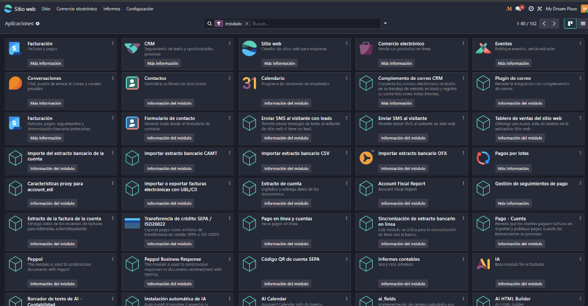
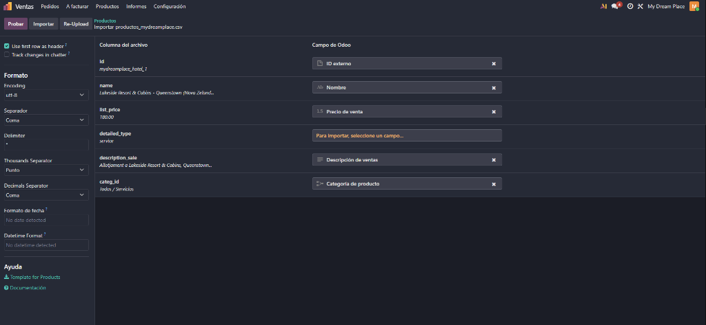
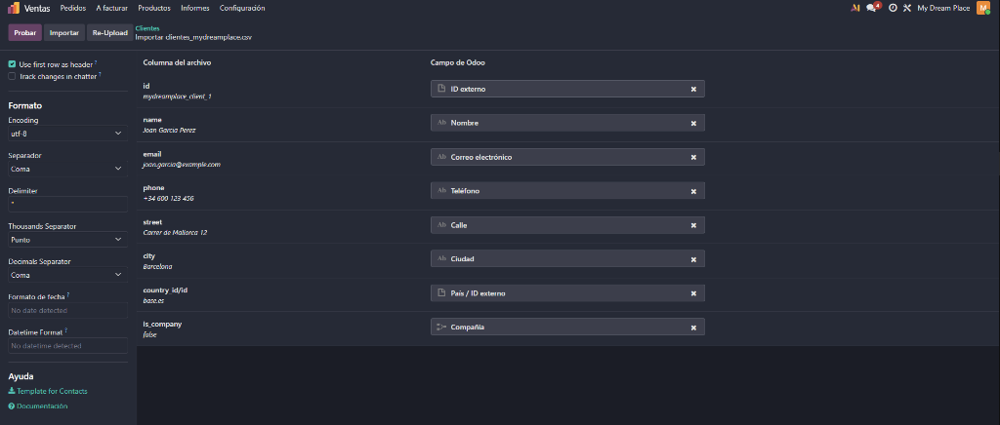
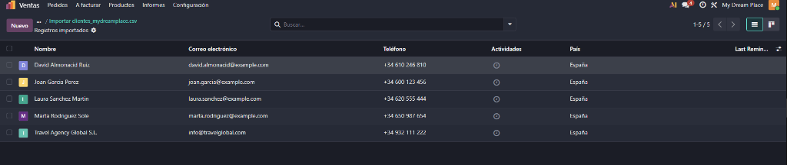
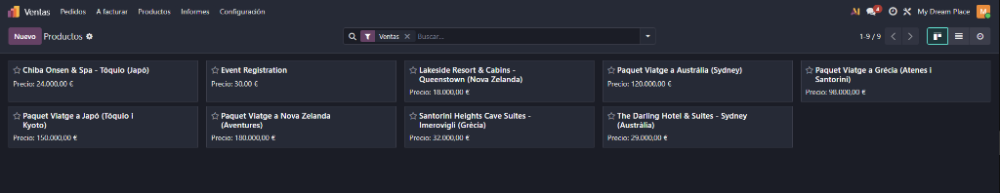
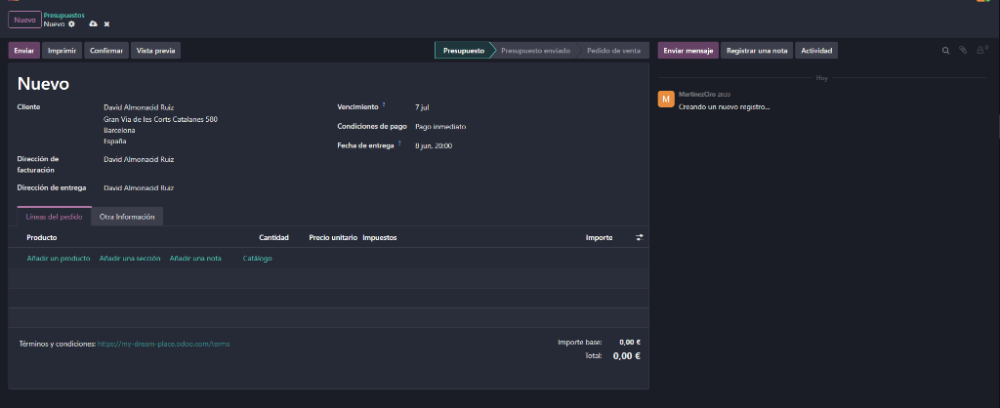
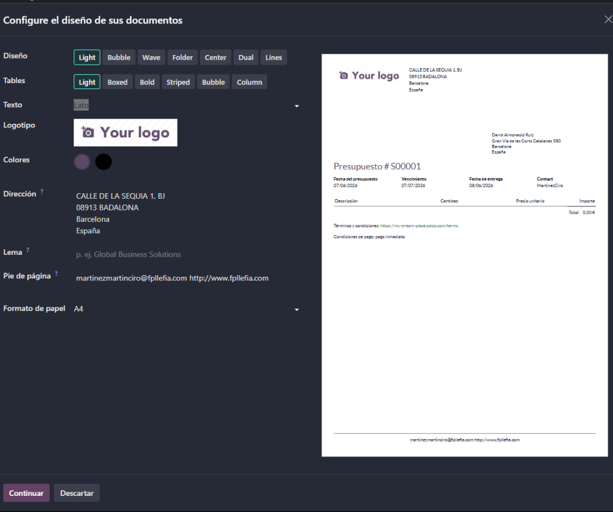
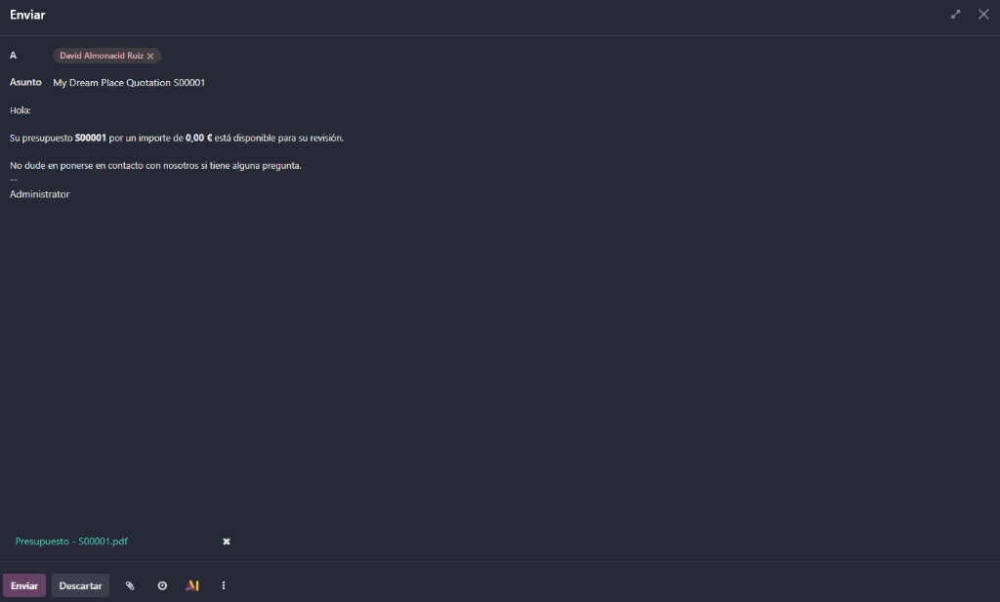
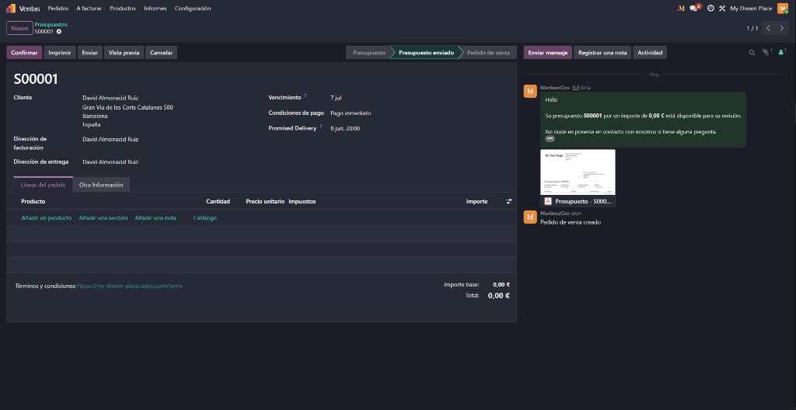

Documentació de l'ERP amb Odoo
Configuració i posada en marxa per a l'agència de viatges i allotjaments My Dream Place (basat en el Projecte 2).
Objectiu del Projecte
Aquest projecte consisteix en la creació d'un compte a Odoo per muntar i simular la gestió empresarial d'una agència de viatges inspirada en My Dream Place. Es configuraran mòduls clau com CRM, Vendes, Facturació, Contactes, entre d'altres, introduint dades de prova per provar el flux complet de treball. Aquesta SPA documenta pas a pas la configuració inicial realitzada fins al moment.
Importació Automàtica de Dades a Odoo
Per evitar haver d'introduir a mà cada hotel, destí i client, hem extret les dades de la base de dades del Projecte 2 (myDreamPlace) i hem creat fitxers CSV compatibles. Pots importar-los en qüestió de segons a Odoo.
Productes i Serveis (Hotels i Packs)
Conté els 4 hotels i 4 packs turístics de myDreamPlace amb els seus preus de venda reals, categories i descripcions.
Descarregar productos_mydreamplace.csvClients i Contactes (CRM/Vendes)
Conté clients individuals i agències amb adreces reals d'Espanya, telèfons i correus preparats per simular factures.
Descarregar clientes_mydreamplace.csvCom importar-los a Odoo pas a pas:
- Entra al teu tauler de control d'Odoo i obre el mòdul corresponent (Ventas → Productos per als hotels o Contactos per als clients).
- A la part superior dreta de la llista (a l'esquerra del filtre), fes clic a Favoritos (o l'icona d'ajust/filtre) i selecciona Importar registros.
- Puja el fitxer CSV descarregat. Odoo detectarà i maparà automàticament els camps (per exemple,
id,name,list_price). - Fes clic al botó Prueba (Test) per validar que les dades s'ajustin al teu ERP. Quan surti el missatge "Todo parece correcto" en verd, prem Importar. ¡I ja tindràs tota la base de dades a punt!
Creació del Compte d'Odoo
Primer pas per al muntatge del programari de gestió empresarial. S'ha realitzat el registre a la plataforma oficial d'Odoo, creant el perfil d'usuari personal amb accés a la consola d'administració (Partner Portal).

martinezmartinciro@fpllefia.com
Selecció d'Aplicacions
Selecció del primer mòdul d'entrada. Triem l'aplicació de Comercio electrónico (eCommerce) per començar, la qual ens permetrà configurar l'agència de viatges per a la venda de paquets i reserves en línia de forma directa.

Nota: Odoo permet arrencar de forma completament gratuïta si se selecciona una sola aplicació inicial. Més endavant podrem activar i interconnectar la resta de mòduls requerits com CRM, Vendes, Contactes i Facturació.
Registre i Configuració de l'Empresa
Introducció de les dades bàsiques de la nostra empresa de viatges. S'assigna el nom del projecte i es crea el subdomini d'accés a Odoo per a la nostra agència de reserves.

my-dream-place.odoo.com
Definició de l'Objectiu de Negoci
Completant l'assistent interactiu d'arrencada d'Odoo. Seleccionem el sector adequat (Agencia de viajes) i definim que el nostre objectiu principal és la venda directa online (vender más).

Aquesta elecció ajuda a Odoo a carregar un formulari d'incorporació especialitzat amb categories de productes per a viatges, allotjaments i activitats.
Selecció del Disseny i Paleta de Colors
Darrer pas de l'assistent d'inicialització. Triem una paleta de colors que s'ajusti a l'estètica elegant i professional de la nostra agència de viatges. També s'ofereix la possibilitat de pujar el nostre logo per extreure els tons de marca directament.

Següent fase: Un cop seleccionat el disseny bàsic, Odoo generarà l'estructura inicial de la base de dades de l'ERP i del lloc web eCommerce per començar a introduir els nostres paquets turístics.
Plantilla del Catàleg Online
Configuració de l'estructura de visualització de productes. Odoo ofereix diferents plantilles per al llistat de productes (Cuadrícula clásica, Cuadrícula moderna, Exhibición, Minimal Cards, Lista compacta, Visual Cards). Seleccionem el format visual per mostrar els nostres packs de viatge i allotjaments d'una manera intuïtiva.

Nota de disseny: La plantilla "Visual Cards" o "Exhibición" és ideal per a agències de viatges, ja que prioritza les fotografies a gran resolució dels destins turístics.
Plantilla de Detall del Producte
Definició del disseny de la fitxa detallada de cada producte. Triem la distribució de la informació (Clásico, Cuadrícula de imágenes, Showcase Grid, Con enfoque, Funcional, Imagen grande), de manera que determinem com es veuran les fotos, preus, botó de reserva i especificacions del viatge.

Per a un lloc web de viatges, la plantilla "Imagen grande" o "Cuadrícula de imágenes" permet que l'usuari s'involucri emocionalment amb les imatges del destí/hotel abans d'iniciar el flux de reserva.
Selecció del Tema Favorit i Portada
Elecció final de la maquetació de la pàgina de benvinguda (Landing Page). Escollim el tema preconfigurat per Odoo que millor s'adapta a la imatge corporativa de My Dream Place, per tal de procedir amb la instal·lació i creació final del lloc de reserves.

Tauler de Mòduls Actius
Verificació de les aplicacions d'Odoo configurades al nostre entorn empresarial. Un cop completat l'assistent d'inici, s'han activat i interconnectat amb èxit els mòduls clau de gestió: Facturación, CRM, Sitio web, Comercio electrónico, Contactos, i Conversaciones.

Importació de Productes (Hotels i Packs)
Carrega massiva de dades de productes mitjançant l'assistent d'importació. Es penja el
fitxer productos_mydreamplace.csv. L'assistent d'Odoo analitza la capçalera del
fitxer i realitza automàticament la correspondència entre els camps del fitxer (preus,
descripcions, noms) i els camps del model de dades d'Odoo.

Importació de Clients (Contactes)
Carrega de clients ficticis per simular vendes i CRM. Es penja el fitxer
clientes_mydreamplace.csv. Odoo maparà els noms, correus electrònics, telèfons,
adreces i països dels nostres clients, reconeixent automàticament les persones de les
empreses gràcies a la columna is_company.

Dada interessant: El camp country_id/id utilitza el codi
estàndard d'Odoo base.es per associar directament el país Espanya,
estalviant errors de picat manuals.
Base de Dades de Clients Importada
Confirmació visual del llistat de contactes. Un cop finalitzat el procés d'importació, la base de dades conté els nous contactes (com Joan Garcia, David Almonacid, o l'agència de viatges Travel Agency Global S.L.) llestos per rebre pressupostos i factures.

Catàleg de Productes Actiu
Vista general del catàleg en Odoo (vista Kanban). Els 4 hotels i els 4 paquets turístics extrets de myDreamPlace s'han inserit amb èxit. S'observen els preus i el format de targeta de serveis, preparats per a la venda a la botiga en línia o a través del tauler comercial de Vendes.

Crear un Nou Pressupost (Presupuesto)
Inici del flux comercial de l'agència de viatges. Es genera un nou pressupost de prova per al client David Almonacid Ruiz, configurant-ne les dates de venciment, la data de lliurament del servei i les condicions de pagament immediat.

Personalització del PDF i Disseny de Documents
Configuració visual de la documentació que rebrà el client. Odoo disposa d'un editor de plantilles per determinar l'estil (Light, Bubble, Wave, Folder, Center, Dual, Lines), la font, el logotip, els colors de la marca i el peu de pàgina de la factura o pressupost en format PDF.

Enviament del Pressupost per Correu
Flux de comunicació automatitzat amb el client. Es mostra la finestra de redacció de correus
d'Odoo amb la plantilla predefinida en espanyol, adjuntant automàticament el pressupost en
format PDF (Presupuesto-S00001.pdf) per a la seva revisió.

Pressupost Enviat i Historial (Chatter)
Confirmació de l'enviament. L'estat de la venda canvia a Presupuesto enviado. A la banda dreta (Chatter o Historial de missatges), queda registrat el correu enviat al client i la miniatura del document PDF per garantir el seguiment comercial.
